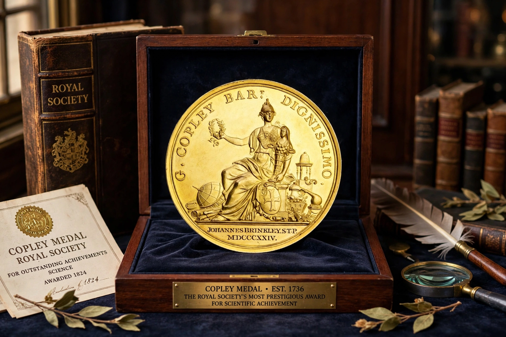

The Copley Medal is the most prestigious award of the Royal Society, conferred for 'sustained, outstanding achievements in any field of science'. It alternates between the physical and biological sciences.

Endowed by a bequest of Sir Godfrey Copley (died 1709), the medal was first awarded in 1731 to Stephen Gray. Recipients include Benjamin Franklin, Michael Faraday, Charles Darwin, Albert Einstein, Robert Bunsen (1877) and many Nobel laureates. It predates the Nobel Prizes by 170 years.